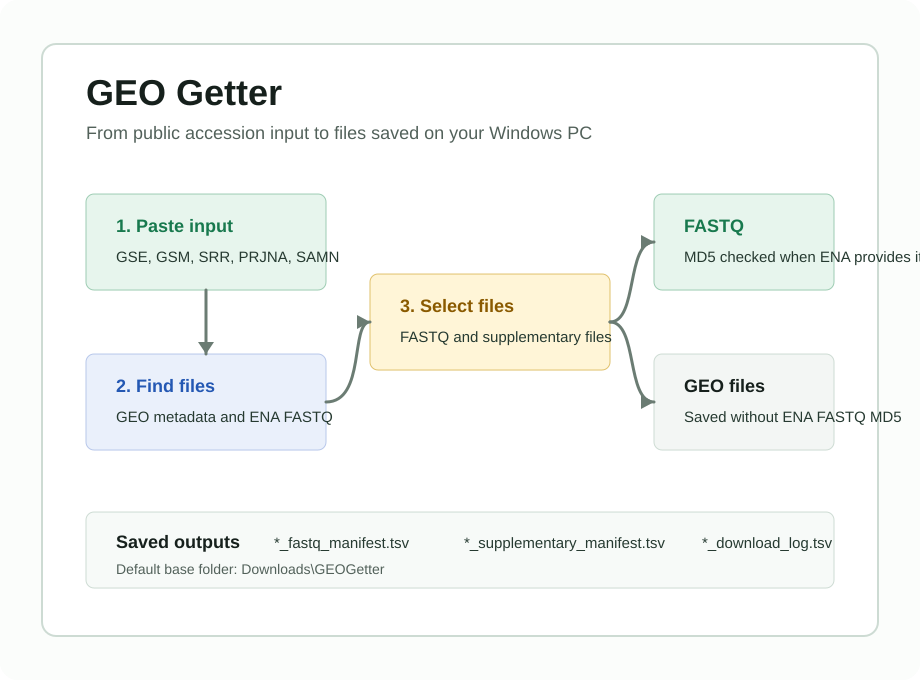

Windows x64 desktop app
GEO Getter
Save raw FASTQ files and GEO supplementary or processed files from public GEO and ENA data without building command-line download plans by hand.
Release assets stay on GitHub Releases. Choose the installer
pattern GEOGetter-Setup-vX.Y.Z.exe or the portable zip
pattern GEOGetter-vX.Y.Z-win-x64-portable.zip.

Installer notice
The Windows installer is unsigned, so Windows SmartScreen may show a warning. Download only from the latest GitHub Release for this repository.
Supported input
Paste one accession or GEO page URL into the app.
- GEO accessions:
GSE52778,GSM... - GEO pages:
https://www.ncbi.nlm.nih.gov/geo/query/acc.cgi?acc=GSE52778 - SRA or ENA accessions:
SRP...,SRX...,SRR...,ERP...,ERR... - BioProject accessions:
PRJNA...,PRJEB...,PRJDB... - BioSample accessions:
SAMN...,SAMEA...,SAMD...
Basic use
The installed app is named GEOGetter. The portable zip
starts with start_geo_getter.vbs.
- Start
GEOGetter. - Paste an accession or GEO page URL.
- Select
Find files. - Choose raw FASTQ files and/or GEO supplementary or processed files.
- Confirm the save folder. The default base folder is
Downloads\GEOGetter. - Select
Download selected files.
Saved outputs
GEO Getter writes selected files and TSV records under the accession folder shown by the app.
*_fastq_manifest.tsv: FASTQ URL, ENA expected MD5, expected size, and local path.*_supplementary_manifest.tsv: GEO supplementary or processed file URL and local path.*_download_log.tsv: download status for each selected file.verification_report.tsv: optional report when saved FASTQ files are checked later.
Integrity checks
FASTQ downloads are checked against MD5 values when ENA provides expected MD5 values. GEO supplementary and processed files are saved from GEO URLs and are not verified with ENA FASTQ MD5 values.